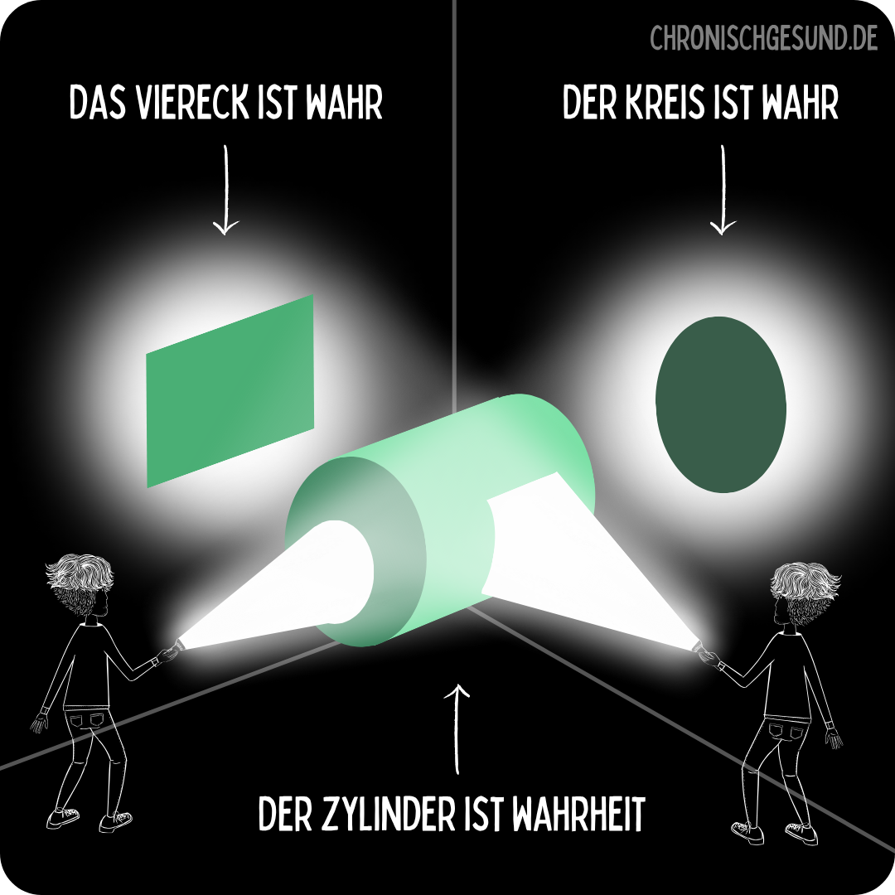

The Inner Shift · für Unternehmerinnen und Solopreneurinnen
Für Unternehmerinnen und Solopreneurinnen, die nach außen liefern und innen auf Reserve laufen. Zurück zu einer Energie, die zu deinem heutigen Körper, deinem Leben und deinem Business passt.
Ohne deinen Alltag komplett umzukrempeln.
Ohne komplizierten Gesundheitsplan, der nach drei Wochen in der Ecke landet.
Worum es geht
Der Klarheits-Call dauert 30 Minuten und ist kostenfrei.
01 Kommt dir das bekannt vor
Im Kundengespräch
Du weißt genau, was du sagen willst, und mitten im Satz ist das Wort weg. Du redest drumherum. Niemand merkt es. Du schon.
Halb vier morgens
Du bist wach. Nicht, weil etwas Konkretes ansteht, sondern weil dein Kopf nicht aufhört. Um sechs stehst du auf, als hättest du gar nicht geschlafen.
Ab drei Uhr nachmittags
Der Termin läuft trotzdem, die Mail geht trotzdem raus. Es kostet dich nur das Doppelte von früher.
Am Wochenende
Das Wochenende ist längst kein Wochenende mehr. Es ist die Zeit, in der du dich erholst, um am Montag wieder zu funktionieren.
Beim Blick auf die To-do-Liste
Du fragst dich, warum der Tag gefühlt immer kürzer wird. Am Abend ist weniger abgehakt als früher, obwohl du nicht weniger gearbeitet hast.
Nach dem Arzttermin
Die Werte sind in Ordnung, heißt es. Du gehst raus und weißt: Irgendetwas stimmt trotzdem nicht.
Du lieferst weiter ab. Du triffst Entscheidungen, du trägst Verantwortung, du führst dein Unternehmen. Von außen sieht alles gut aus.
Aber tief in dir spürst du eine Leere. Und dass etwas nicht in Ordnung ist.
Und du fragst dich, wie lange das noch gutgeht.
Kommt dir das bekannt vor? Dann lass uns 30 Minuten sprechen.
Klarheits-Call buchen02 Wer dich begleitet
Nicole Lurz · Heilpraktikerin · Mentorin
Ich wollte immer Medizin studieren. Und ich wollte es anders machen, besser. Schon damals habe ich gesehen, wo Potenzial liegen bleibt und dass es auch anders gehen muss. Es wurde ein Umweg daraus, über eine Ausbildung und ein BWL-Studium. Heute arbeite ich seit über 14 Jahren in eigener Praxis, mit Schwerpunkt Frauengesundheit, Hormone und Regenerationsmedizin.
Ich bin selbst 55, postmenopausal und Unternehmerin. Ich weiß, wie es ist, wenn der Körper anfängt, eigene Regeln zu machen, und das, was jahrelang funktioniert hat, plötzlich nicht mehr ausreicht. Mit einem „Das ist halt so" wollte ich mich weder als Frau noch als Therapeutin zufriedengeben.
Ich kenne beide Seiten: den Körper und die Zahlen, die trotzdem stimmen müssen.
Was ich immer wieder höre: wie schnell ich eine Situation erfasse und den roten Faden für jede Einzelne finde. Im Gesundheitsmentoring genauso wie im Business.
Mentorin für Regenerationsmedizin · Immunsignatur-Coach · Expertin für Frauengesundheit und Hormone · Diplom-Kauffrau
03 Und das ist das Frustrierende
Du bist gesundheitsbewusst. Du ernährst dich gut, du hast Podcasts gehört, Bücher gelesen, Empfehlungen umgesetzt, und beim Arzt warst du auch.
Vielleicht hat manches davon geholfen. Aber auch nicht so richtig.
Du hast Informationen, vielleicht sogar sehr viele. Was dir fehlt, ist eine Strategie. Denn einzelne Maßnahmen können sinnvoll sein und trotzdem kein Gesamtbild ergeben.
04 Der Perspektivwechsel
Deine Hausärztin schaut auf die Schilddrüse. Dein Kardiologe auf den Blutdruck. Dein Orthopäde auf die Wirbelsäule und die Knochendichte. Jeder sucht nach der Ursache in seinem Ausschnitt, und jeder hat in seinem Ausschnitt recht.

Grafik: © chronischgesund.de, Mojo-Institut für Regenerative Medizin
Ein Zylinder wirft von der einen Seite einen eckigen Schatten, von der anderen einen runden. Beide Schatten sind echt. Keiner ist die ganze Form.
Genau das passiert mit deinem Körper, seit Jahren. Jeder schaut auf seinen Ausschnitt. Meine Aufgabe ist der Zylinder.
Die übliche Frage
Was sind die Ursachen meiner chronischen Beschwerden?
Meine Frage
Was brauchst du und dein Körper für chronische Gesundheit?
Das ist der ganze Unterschied
Nicht gegen Krankheit. Für Gesundheit.Wenn du wissen willst, wie dein Gesamtbild aussieht:
Klarheits-Call buchenDu brauchst nicht noch mehr Informationen. Du brauchst jemanden, der die Fäden zusammenbringt und dir deinen Weg zeigt, ohne weiteres Ausprobieren.
05 Meine Methode
Gesundheit ist kein Zufall und kein Schicksal. Sie ist eine Architektur. Jede Etage hat eine Aufgabe, und keine trägt ohne die darunter.
Tipp: Jede Etage lässt sich antippen.
Das ist das Ziel. Du führst deinen Betrieb, dein Leben und dich selbst wieder souverän. Aus der Fülle heraus, nicht aus dem Reservetank.
Wer bist du, wenn du nicht die Unternehmerin, die Mutter, die Tochter bist? Welche Werte lebst du wirklich, und welche unterdrückten Emotionen fressen gerade deine Energie?
Regenerationsmedizin und das Zusammenspiel von Nerven-, Immun- und Stoffwechselsystem.
Gewohnheiten und Alltagstauglichkeit. Der Hebel, der Wissen in eine volle Unternehmerinnen-Woche bringt.
Das System der sechs Doktoren, dein Körpergedächtnis und das, was nach der Begleitung bleibt.
Fachlich geht es um Bioenergetik und deine Mitochondrien, also die Kraftwerke in deinen Zellen. Die erste Frage ist deshalb immer: Produzierst du genug Energie? Oder hast du ein Leck in der Verteilung, ein Missverhältnis zwischen dem, was reinkommt, und dem, was verbraucht wird? Wenn das Fundament bröckelt, nützt dir keine Fassade. Keine Diät, kein Schlafmittel, kein neues Routinen-Programm.
Wir finden dein Haupt-Energieleck, bevor du loslegst. Sitzt es im Fundament, also im Körper? Oder im Obergeschoss, in Abgrenzung und Identität? Ohne diesen Kompass läufst du im Kreis.
Und darunter liegt ein einziger Satz
Alles ist Energie.Du stehst unter Dauerfeuer, nicht nur körperlich. Jedes Mal, wenn du dich über einen Konflikt aufregst oder dir Sorgen um deine Eltern machst, verbrauchst du genau die Energie, die deinem Körper für Reparatur und Fokus fehlt.
Körperlich
Stille Entzündungen, Darm, Blutzucker-Achterbahn, Hormondrift, Mikronährstoff-Mängel, zu wenig Schlaf.
Mental und sozial
Konflikte in der Familie, Pflege der Eltern, Doppelbelastung, Existenz- und Zukunftsängste.
Selbst gemacht
Perfektionismus, Fremdbestimmung, das Gefühl, für alle funktionieren zu müssen.
Deshalb
Du musst nicht alles verändern. Du musst das Richtige verändern.Du willst wissen, wo bei dir das Energieleck sitzt?
Klarheits-Call buchen06 So arbeiten wir
Wissen allein verändert nichts. Deshalb hört die Begleitung nicht beim Verstehen auf, sondern erst, wenn es in deinem Alltag angekommen ist.
01
Was in deinem System tatsächlich passiert. Dein Befund, nicht die Halbwahrheit aus dem nächsten Podcast.
02
Warum es ausgerechnet bei dir so ist. Der Unterschied zwischen Information und Einordnung.
03
Du spürst die Veränderung im Alltag, nicht nur auf dem Papier. Das ist der Punkt, an dem es kippt.
04
Es bleibt. Auch dann noch, wenn die Begleitung vorbei ist.
Wir fangen nicht bei null an.
Du bringst deine Geschichte mit: Beschwerden, Diagnosen, Vorerkrankungen, Laborwerte, Behandlungen, eigene Versuche und die Erfahrung, was funktioniert hat und was nicht. All das gehört auf den Tisch, weil genau dort das Muster liegt.
Dazu kommt deine Blutanalyse. Abgestimmt auf das, was bereits vorliegt, stelle ich dir ein individuelles Laborprofil zusammen, also genau die Werte, die bei dir wirklich etwas aussagen. Ausgewertet wird das im Kontext der Regenerationsmedizin, und zwar nicht isoliert: Die Laborwerte sind eine Information von mehreren, die zusammen erst das Bild ergeben.
Am Ende siehst du, wo es sich für dich wirklich lohnt, genauer hinzuschauen.
Gesundheit funktioniert nicht in Schubladen.
Wir schauen auf die Zusammenhänge: Energie und Regeneration, Nervensystem, Hormone, Ernährung, Bewegung, Schlaf, Belastung, Gewohnheiten und dein Business. Dafür arbeiten wir mit dem System der sechs Doktoren. Das sind keine sechs Programme, die du abarbeitest, sondern sechs Perspektiven, mit denen wir deine Hebel finden.
Dr. Atmung
Dein direktester Zugang zum Nervensystem.
Dr. Nahrung
Was dein System braucht. Was es gerade kostet.
Dr. Bewegung
Was deinem Körper hilft, sich zu regulieren.
Dr. Naturkontakt
Der einfachste Reset, den es gibt.
Dr. Verbindung
Wer und was dich trägt.
Dr. Story
Was du dir erzählst. Und was davon wirklich stimmt.
Nicht mehr machen. Das Richtige machen.
Aus den Erkenntnissen wird dein Plan. Wir priorisieren, verändern Gewohnheiten dort, wo sie dich ausbremsen, beobachten, was wirkt, und passen an. Was für dich nicht funktioniert, fliegt wieder raus.
Veränderung braucht keine maximale Disziplin. Sie braucht einen Weg, den du auch in einer vollen Woche gehen kannst.
Wir verändern nicht alles. Wir verändern das, was verändert werden muss.
Das eigentliche Ziel.
Am Ende sollst du keinen Plan besitzen, den du abarbeitest. Du sollst deine eigenen Signale lesen können: früher merken, wenn es kippt, wissen, was dann hilft, und handeln, bevor dein Körper die Entscheidung für dich trifft.
Nicht zurück zu der Frau von früher. Sondern zu einer, die weiß, wie sie heute arbeitet.
Klingt nach dem Weg, den du suchst?
Klarheits-Call buchenGesundheit & Leadership
High Performance beginnt im Nervensystem.07 Der Rahmen
Im VIP gibt es keine feste Laufzeit. Je nach Ausgangssituation und den Zielen, die du erreichen willst, liegt die Begleitung zwischen 12 Wochen und 6 Monaten. Im Circle ist der Rahmen fest: 16 Wochen mit festen Terminen.
08 Dein Weg
VIP hat keine feste Laufzeit und startet, wenn du startest, zwischen 12 Wochen und 6 Monaten, abgestimmt auf deine Ziele. Der Circle hat einen festen Rahmen von 16 Wochen, feste Termine und eine feste Gruppe. Beide Wege beginnen mit demselben Blind Spot Check.
Die persönliche Begleitung. Für Frauen, die volle Tiefe, eigenes Tempo und direkten Zugang zu mir wollen.
Kein Standardpaket. Umfang, Dauer und Ablauf richten sich nach deiner Ausgangssituation und den Zielen, die du erreichen willst.
Der Preis richtet sich nach Umfang und Dauer, von 12 Wochen bis 6 Monate. Was du brauchst, legen wir im Klarheits-Call gemeinsam fest. Blind Spot Check mit Blutanalyse ist enthalten.
Ratenzahlung möglich. Zusätzlich Labor und Diagnostik, in der Regel 150 bis 450 €.
Dieselbe Methode, derselbe Blind Spot Check, im festen Rahmen einer kleinen Gruppe. Für Frauen, die Struktur und den Rückenwind anderer wollen.
Fester Preis. Blind Spot Check mit Blutanalyse und Abschlussgespräch 1:1 enthalten.
Ratenzahlung möglich. Zusätzlich Labor und Diagnostik, in der Regel 150 bis 450 €.
09 Dein nächster Schritt
30 Minuten, kostenfrei. Wir schauen uns deine Situation an und klären, welcher Weg zu dir passt, VIP oder Circle. Oder etwas ganz anderes.
Ich begleite nur wenige Frauen gleichzeitig. Deshalb sprechen wir vorher miteinander, statt dass du einfach buchst.
Der Kalender lädt nicht? Dann geht es hier direkt zur Terminauswahl.
Lieber erst kurz schreiben statt gleich einen Termin?
Frag mich per WhatsApp10 Was Frauen sagen
„Es war so viel dabei, was mir vorher nicht bewusst war. Nicole hat mir Zusammenhänge gezeigt, die kein Arzt gesehen hat, und konkrete Wege, die ich selbst gehen kann."
Verena, Unternehmerin und Schneiderin
„Die Zusammenarbeit mit Nicole hat mir eine völlig neue Perspektive auf meine Situation gegeben. Ihre einfühlsame und gleichzeitig klare Art hat mir geholfen, meinen Fokus zu stärken und Gewohnheiten zu verändern, die mich jahrelang ausgebremst haben."
Imke, Solo-Preneurin
„Nicoles ganzheitliche Herangehensweise hat mir geholfen, nicht nur körperliche Beschwerden zu lindern, sondern auch mentale Blockaden zu überwinden. Nicole strahlt eine warme und positive Energie aus und ihre empathische Art schafft eine vertrauensvolle Atmosphäre, in der ich mich jederzeit wohl und verstanden fühlte."
Anja Tietz, Yogalehrerin und Lifecoach
„Danke für die Zusammenfassung. Schade, dass das kein Arzt sieht, der mich jahrelang behandelt."
Lydia G.
11 Ehrliche Einschätzung
Ich bringe meine Expertise ein und führe dich. Die Bereitschaft, etwas zu verändern, bringst du mit.
12 Häufige Fragen
Nein. Aber du wirst Dinge verändern. Der Unterschied: nicht alles gleichzeitig, sondern das, was bei dir wirklich zählt.
Wir starten nicht mit einem Standardplan, sondern mit deiner Ausgangslage: deine Befunde, deine bisherigen Versuche, deine Diagnostik. Erst daraus entsteht dein Weg.
Gleiche Methode, gleicher Blind Spot Check. VIP ist die volle 1:1-Tiefe mit direktem Zugang zu mir, ohne feste Laufzeit. Circle ist eine kleine Gruppe von maximal drei bis fünf Frauen mit festem 16-Wochen-Rahmen und festen Terminen.
Im VIP gibt es keine feste Laufzeit. Je nach Ausgangssituation und Zielen liegt sie zwischen 12 Wochen und 6 Monaten, das stimmen wir gemeinsam ab. Der Circle hat einen festen Rahmen von 16 Wochen.
Deine komplette Ausgangslage und eine Blutanalyse. Abgestimmt auf das, was schon vorliegt, stelle ich dir ein individuelles Laborprofil zusammen und werte es im Kontext der Regenerationsmedizin aus. Die Werte sind dabei eine Information von mehreren, nicht die ganze Antwort.
Die gehören zu deiner Ausgangslage und fließen in den Blind Spot Check ein. Inner Shift ersetzt keine ärztliche Diagnostik oder Behandlung, und bestehende Behandlungen werden nicht eigenmächtig verändert.
Das Ziel ist ausdrücklich nicht, deinen Kalender mit einem weiteren Programm zu füllen. Wir suchen Veränderungen, die in deine echte Woche passen.
Der Circle kostet 2.900 €, inklusive Blind Spot Check und Abschlussgespräch 1:1. Das VIP 1:1 liegt zwischen 3.500 und 8.000 €, je nach Umfang und Dauer, die wir gemeinsam festlegen.
Das kann sein. In der Regel kommen für Labor und Diagnostik zwischen 150 und 450 € dazu.
30 Minuten, kostenfrei, per Video. Du erzählst mir, wo du stehst, ich stelle Fragen, und am Ende weißt du, ob und welcher Weg für dich sinnvoll ist. Wenn nicht, sage ich dir das auch.
Jetzt
Du weißt, dass ein Weiter-so keine Lösung ist. Und du willst dein Leben trotzdem nicht umkrempeln. Genau dafür gibt es Inner Shift.
Buch dir 30 Minuten. Ich schaue mir deine Situation an und sage dir ehrlich, ob und wie ich dich begleiten kann.
Die Begleitung ist auf wenige Frauen gleichzeitig begrenzt.